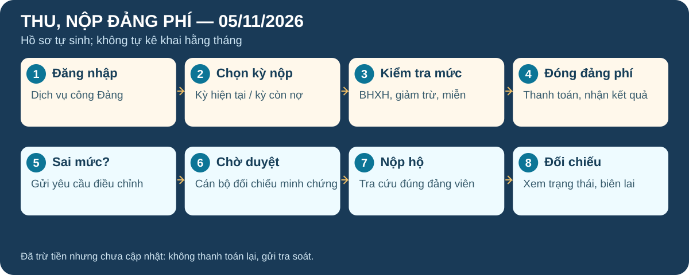
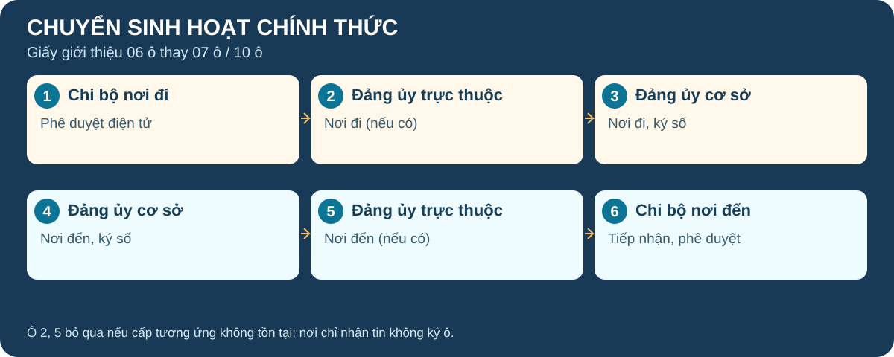
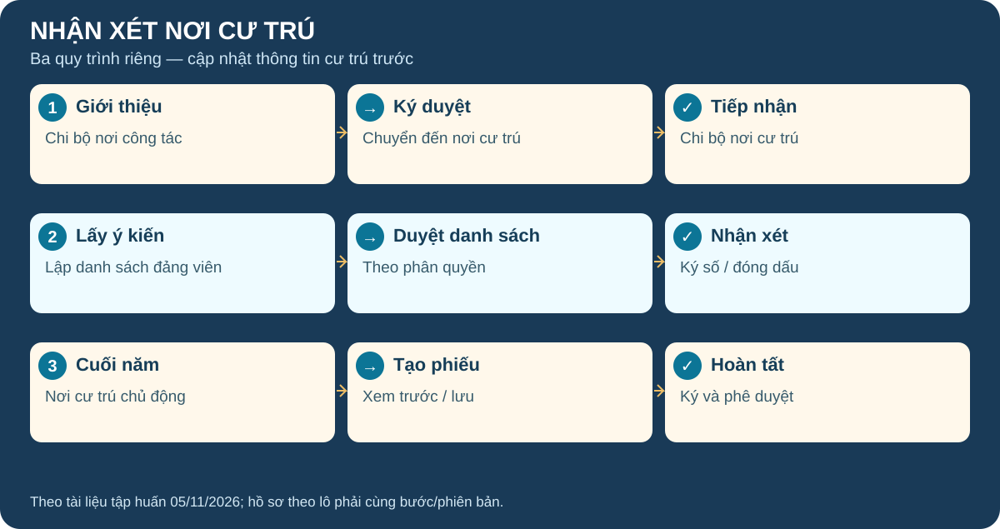
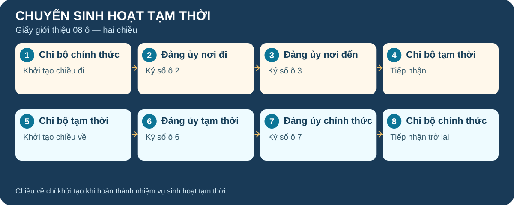

Thu, nộp đảng phí
Đảng viên không còn tự kê khai hồ sơ hằng tháng; hệ thống tự sinh hồ sơ. Quyết định số 762-QĐ/VPTW ban hành ngày 31/10/2026.

- Chọn chức năng: Đăng nhập → Thu nộp Đảng phí → Xem chi tiết nghĩa vụ cho bản thân hoặc nộp hộ.
- Kiểm tra kỳ: Chọn Kỳ nộp; kiểm tra dữ liệu BHXH, số tiền, thông tin truy thu/giảm trừ và miễn/giảm. Kỳ đã hoàn thành chỉ xem.
- Nộp: Nếu thông tin đúng, nhấn Đóng đảng phí, chọn phương thức thanh toán; kiểm tra biên lai, lịch sử ở Dịch vụ công của tôi → Đảng phí.
- Điều chỉnh: Nếu sai mức/chưa có căn cứ, chọn Yêu cầu điều chỉnh hoặc Gửi thông tin mức đảng phí. Nhập lý do, giá trị và ít nhất 1 tệp minh chứng (tối đa 20MB/tệp).
- Người xử lý: Bí thư/cán bộ có quyền → Quản lý hồ sơ Đảng phí → Hồ sơ cần điều chỉnh → Xử lý yêu cầu → kiểm tra minh chứng → nhập Mức phê duyệt và lý do → Phê duyệt điều chỉnh.
- Nộp hộ: Tra cứu bằng số thẻ, họ tên, ngày sinh; kiểm tra đúng người/kỳ/số tiền trước khi thanh toán.
Nguồn: Quyết định 762-QĐ/VPTW (31/10/2026), phụ lục quy trình và PDF hướng dẫn nâng cấp thu nộp đảng phí (22 trang).
Chuyển sinh hoạt đảng chính thức
Mẫu Giấy giới thiệu sinh hoạt đảng chính thức điện tử 06 ô thay mẫu 07 ô và 10 ô, dùng cả khi chuyển trong cùng đảng bộ cơ sở.

- Đảng viên: Đăng nhập VNeID mức 2, chọn thủ tục, khai thông tin nơi đến, chuẩn bị quyết định/căn cứ và bản tự kiểm điểm, gửi hồ sơ.
- Ô 1–3 (nơi đi): Chi bộ nơi đi xác nhận điện tử ô 1; đảng ủy trực thuộc cơ sở (nếu có) ký ô 2; đảng ủy cơ sở ký ô 3.
- Ô 4–6 (nơi đến): Đảng ủy cơ sở ký ô 4; đảng ủy trực thuộc cơ sở (nếu có) ký ô 5; chi bộ nơi đến tiếp nhận, xác nhận điện tử ô 6.
- Kết quả: Hồ sơ kết thúc, đảng viên nhận giấy giới thiệu điện tử; hệ thống cập nhật dữ liệu sinh hoạt đảng.
Nguồn: PDF HDSD nâng cấp chuyển sinh hoạt đảng chính thức (15 trang) và dự thảo phụ lục quy trình.
Lấy ý kiến nhận xét nơi cư trú
Bổ sung cập nhật chi bộ nơi cư trú và phân biệt ba luồng nghiệp vụ theo mục đích sử dụng.

- Quy trình 1: Giới thiệu đảng viên về sinh hoạt nơi cư trú hoặc cập nhật khi thay đổi địa chỉ: tạo hồ sơ → ký duyệt → nơi cư trú tiếp nhận.
- Quy trình 2: Chi bộ nơi công tác lập danh sách đảng viên cần nhận xét (công tác cán bộ) → duyệt danh sách → chi bộ nơi cư trú nhận xét → ký/đóng dấu.
- Quy trình 3: Chi bộ nơi cư trú chủ động tạo hồ sơ nhận xét cuối năm → nhập phiếu → xem trước → lưu → ký, đóng dấu và phê duyệt.
- Hồ sơ theo lô: Hướng dẫn có xử lý nhiều hồ sơ, tối đa 50 hồ sơ/lượt cùng bước và phiên bản; thực hiện theo đúng quyền và điều kiện trên màn hình.
Nguồn: PDF HDSD nâng cấp lấy ý kiến nhận xét (32 trang) và dự thảo quy trình theo Quy định 221-QĐ/TW.
Chuyển sinh hoạt đảng tạm thời
Giấy giới thiệu điện tử 08 ô: chiều đi (ô 1–4) và chiều về (ô 5–8).

- Chiều đi: Đảng viên khai nơi đến, thời gian, lý do và tài liệu cần thiết; chi bộ chính thức → đảng ủy nơi đi → đảng ủy nơi đến → chi bộ tạm thời lần lượt xác nhận 4 ô đầu.
- Chiều về: Sau khi hoàn thành nhiệm vụ, chi bộ tạm thời khởi tạo hồ sơ trở về; đảng ủy tạm thời → đảng ủy chính thức → chi bộ chính thức lần lượt xử lý ô 5–8.
- Theo dõi: Đảng viên nhận thông báo, giấy giới thiệu điện tử; dữ liệu sinh hoạt được đồng bộ để quản lý đảng viên và thu nộp đảng phí.
Nguồn: Dự thảo phụ lục quy trình chuyển sinh hoạt đảng tạm thời (DOCX, ô số/ngày quyết định chưa điền).